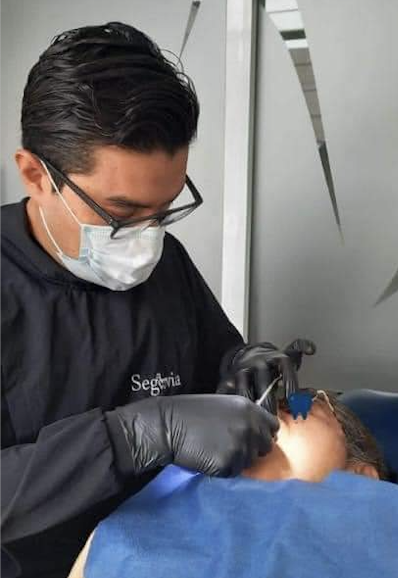

Especialidades Dentales Segovia
Licenciado Diego Segovia Solís

|
RESUMEN PROFESIONAL:
Lic. En estomatologia con 21 años de experiencia en el
campo de la odontología, mi compromiso principal es
con el cuidado y la salud bucodental de mis pacientes.
Cuento con habilidades, experiencia y gusto por el
aprendizaje constante para mantenerme actualizado
por medio de cursos, talleres, mesas clínicas,
exposiciones y diplomados con el objetivo de ofrecer
el mejor servicio dental.
Universidad Justo Sierra
Lic. Estomatologia
Generación 2009-2012
|